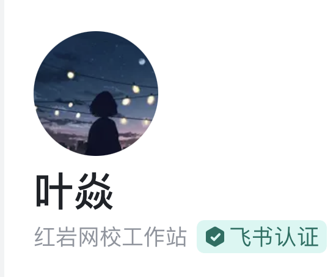

大一总结
本文最后更新于：2023年8月16日 晚上
实现一个目标最好的方法，就是定下这个目标并且坚定不移的向他出发
回顾大一
- 转专业 ✔
- 红岩网校 ✔
- 没挂科 ✔
- 奖学金 ？
- 健身 ✔
看到今年红岩招新群的这些 23 学弟，想到去年在贴吧上听说到红岩网校这个大名的时候，就决定大一无论如何都要挤进网校。也听说网校淘汰率高的吓人，1000 个新生最后剩 10 个，但学姐学长又说没基础也可以，所以我为啥不试一下呢。
转专业的话，其实当初只想转到计算机学院来，当初也觉得很难，但是其实只要你坚定目标并且不断地向前迈步，也没那么恐怖。最后也是决定以前端为主，转到一个应该不那么累的专业去。
大一上
大一上的疫情也是诠释了什么叫假期比上课时间还多，9 月末去，12 月初回，中间上课甚至几乎都在寝室上课。
大一上对我的提升其实很少，基本都是从 0 到 1，比如喜欢上健身，前端技术上从 0 到 1，老油条属性。
疫情在寝室的上课，感谢我那五个卷狗舍友，可以说网课一节不落，学的比谁都认真，最后也是成功的一个寝室 6 个人转走 5 个
技术层面只能感谢学长领进门，从 0 到 1，甚至奠定了未来的方向，这一点我觉得是大一最重要的一节，就是目标。其实大一很多课都要求我们有个方向不要茫然，没有目标没有目的就很容易无所事事导致浪费一个学期甚至一年。而我在这方面就做得很好我觉得，有个明确的目标并且不断努力向他出发，结果一定是好的。
也许以后这个技术并不能让我吃上饭，但是技多不压身，很多开发技术都有相似的地方，到时候再说也来得及，总不能因为害怕失败就不去努力吧
大一下
疫情没了，压力来了，经过寒假网校考核，难度更上一层楼，而且说实话大一下网校的课也不是那么有用，主要还是靠自己自学去了。React，typescript，antd，webpack，这些入门内容井喷式进入我的脑子，中途还和后端的一个哥们参加数据库大赛，能算是第一次和后端对接，虽然最后也只拿了二等奖 ，但是过程还是很宝贵的。
不过大一下学校的课程上的很水，差点还挂了高数下，只能说重心不在这边了，专业还是转了，看中得就是课少并且也是计院。尊称我为计 ✌
反正就是学学学，敲敲敲，拿下红岩网校入场卷

展望大二
其实现在也有点茫然，知道了大方向但是没有了那种小目标
大二找实习又有点早，但是不找又有点无所事事。
不管怎样，技术是要学的，代码质量是要提升的，感觉自己暑假接的项目接着学长学姐写的代码，像在别人的美味佳肴上扔了老鼠屎。
多读别人的好代码，多做总结多理解
多学新技术，多跟时代方向
“写代码就像写作文，学习别人优美的句子是怎么写的，你才写得出来” - moon-ic